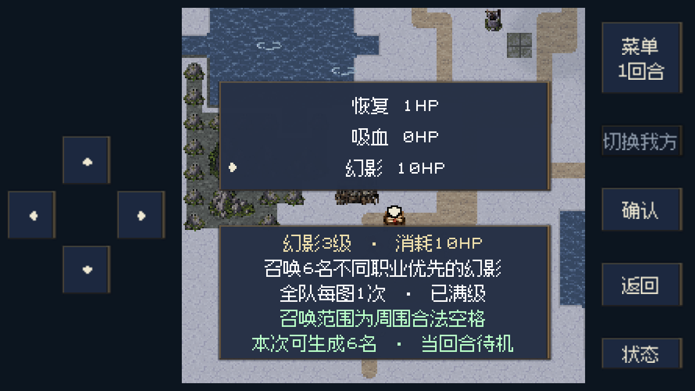

Godot后台实机渲染，1334×750手机触控布局，非iPhone录屏。支持暂停、拖动和全屏。
成长与数量每位施法者成功使用6次，法术永久提升1级，最高3级。第6次后升级，下一次施法使用新等级。周围合法空位不足才减少人数。
不同职业与保底先生成进阶或终阶保底，再优先选择未出现的物理职业。数量优先，地形限制下允许重复。每个幻影保持对应玩家职业1级。
经验与记录幻影不积累自身经验；攻击、反击取得的经验交给仍能作战的召唤者。HP、幻影、熟练度和全队使用次数一起保存、回溯与重试。
两轮实际输入通关
| 关卡 | 完成内容 | 结果 |
|---|
| F32 盐路解围 | 正常施法、结束回合、作战、护送与关卡结算；22回合，1092次输入，13笔幻影经验归属记录。 | 通过 |
| S51 神宫旧书库 | 正常施法、存读档、取回原件、击败守卫并在南端交接；10回合，601次输入，3笔经验归属记录。 | 通过 |
两轮均从已经学会幻影的真实检查点开始，重入当前地图；未修改人物能力、法术解锁、位置或胜利条件。其余交战加速执行，页面片段记录召唤与经验交锋。不是整章连续通关录像。
规则与数值实机核对

明确标注的容量测试场景：预设法术3级及20名普通友方，实际按菜单施放后生成6名，记录重载保持26名。
检查范围、测试场景与来源
2级／3级片段属于受控边界场景：在真实F32检查点上预设熟练度6／12，3级场景补足20名普通友方。实际召唤、落点、消耗、职业数值和动画均由当前游戏执行；不把这些场景当作自然养成通关。
新规则检查覆盖零落点不消耗、部分落点、职业去重、进阶／终阶保底、20＋6容量、同一地图全队锁定、经验防重、个人魔防、召唤者濒死清理、合军、存读档和回溯。另复用110项回溯检查；20＋6场景经普通菜单结束回合，6名幻影出生回合均不行动、下回合均正常行动。最后从真实书库取档检查点继续交接，确认胜利结算清除临时幻影，存读档仍保留本图已用记录。旧敌军兵种／数值快照检查存在既有差异，已在未修改HEAD的临时副本中复现相同结果，没有改旧断言掩盖失败。
预览与两轮试玩摘要 · 规则检查 · 第一轮详细记录 · 第二轮详细记录 · 20＋6行动队列 · 交接与结算检查 · 旧用例基线对照 · 图片与影片规格
完整游戏设定 · 完整游戏流程